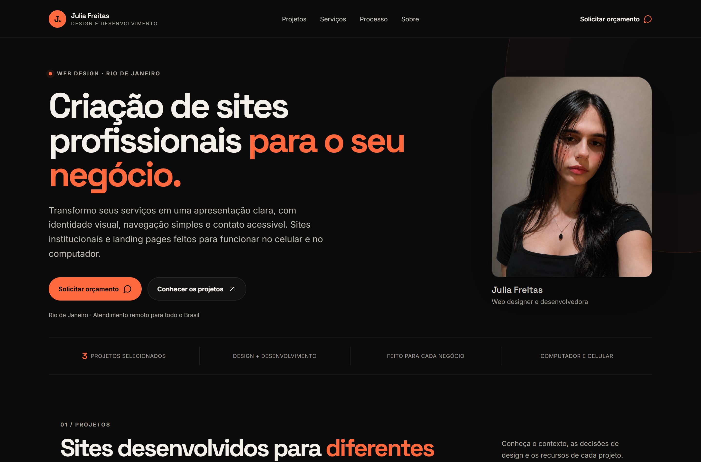
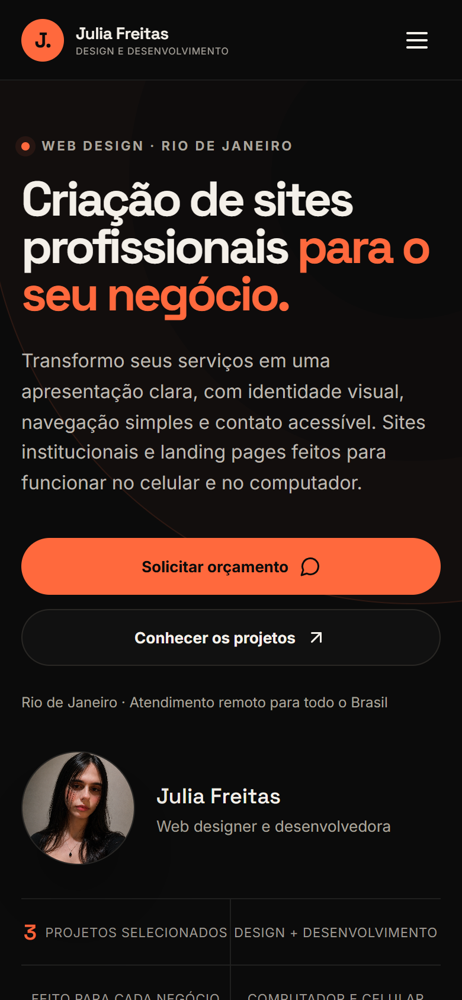

J.
Julia FreitasDESIGN E DESENVOLVIMENTO
UMA PRESENÇA À ALTURA DA SUA MARCA
Seu negócio merece
um site à altura.
Apresente seus serviços com clareza e facilite o próximo passo de quem quer contratar você.


01
Identidade própriaUm visual que representa
a sua marca.
a sua marca.
02
Serviços em destaqueInformações organizadas
para facilitar a escolha.
para facilitar a escolha.
03
Contato diretoUm caminho simples
até o seu WhatsApp.
até o seu WhatsApp.